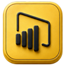

ビジネスインテリジェンス · プロジェクト 14

プロジェクト 13 · Power BIダッシュボード
Power BIダッシュボード · Spotify Charts
楽曲、アーティスト、アルバム、市場の公開データからSpotify Chartsのランキングを分析します。Power BIのダッシュボードで再生数、チャート入りの状況、時期ごとの首位の変化、地域別分布を確認できます。

背景と目的
Spotify Chartsの公開データからPower BIダッシュボードを構築します。楽曲、アーティスト、アルバム、日付、市場を結び付け、各チャートへの登場状況を調べます。
再生が集中する曲、継続してランクインするアーティスト、時期ごとの首位の変化、データ内で特に活発な市場を調べます。
モデルの開発
- Spotify Chartsの公開データを主な出典とし、楽曲とアーティストの日次ランキング、アルバムの週間ランキングを分析します。
- Power BIでの分析に向け、楽曲、アーティスト、アルバム、国、日付、表示用の補助情報を分け、ファクト、ディメンション、リレーションを持つデータモデルを準備します。
- 総再生数、チャート登場回数、最高順位、トップ10入りの回数、市場別の登場状況、首位曲の集中度、ランキングの推移を指標化します。
- 期間、国、市場グループ、アーティスト、楽曲で絞り込める対話型の可視化で、音楽の消費傾向を探ります。
現在の進捗と今後の予定
現段階では、データ準備、リレーショナルモデル、Power BIによる可視化をつなげ、Spotifyの音楽ランキングをわかりやすく示しています。
成果物は、ポートフォリオ向けのダークテーマの対話型ダッシュボードを予定しています。全体像をつかみやすくし、チャートの集中度、首位、地域別の登場状況、推移をグラフで示します。